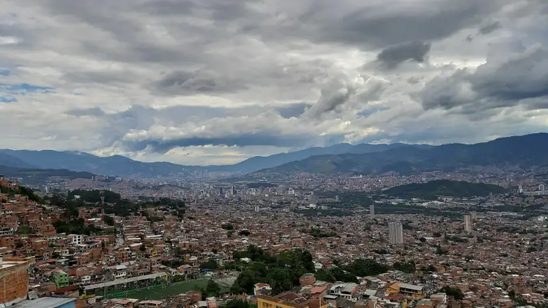

Estudio de probabilidad electoral
Estudia las elecciones pasadas, las casas políticas y a los aspirantes de cada municipio para estimar qué puede pasar en la próxima elección. Lo que dice de su elección es privado.

CivisLab
Información para la decisión pública
Datos
La narrativa de los datos llevada a la estrategia
Ninguna cifra sin fuente
Sepa cómo vota, quién manda y cómo vive cada municipio
Cada número dice de dónde sale
Antioquia · 125 municipios
CivisLab reúne en un solo lugar los resultados de las elecciones, las casas políticas, los datos oficiales de cada municipio y lo que dicen sus medios. Se lo entregamos en palabras sencillas, con la fuente de cada número, para que su campaña decida mejor.
Lo que le contamos de cada municipio
Cómo lo hacemos
CivisLab es la marca. Detrás hay tres herramientas que trabajan juntas: Atlas alimenta al Estudio, y Pulso le cuenta de qué se habla.
Estudia las elecciones pasadas, las casas políticas y a los aspirantes de cada municipio para estimar qué puede pasar en la próxima elección. Lo que dice de su elección es privado.
Los datos oficiales de cada municipio (salud, educación, pobreza, seguridad), explicados: si están bien o mal, qué significan y de dónde sale cada número.
Lee lo que publican los medios de cada municipio y le cuenta de qué se está hablando, semana a semana.
En 2023, 38 de las 125 alcaldías de Antioquia se definieron por menos de 5 puntos. Ahí, conocer el municipio puesto por puesto hace la diferencia. Los resultados de los 125 son abiertos y gratuitos. Sobre votos válidos. Fuente: Registraduría, alcaldía 2023. Corte 2026-10-25.
Ver los 125 municipiosCuéntenos el municipio y la elección. Le respondemos a mano, con lo que ya existe para ese territorio y lo que haría falta construir.